KNX and Control4
License, Copyright, and Trademark
The content contained in this repository is the intellectual property of Snap One, LLC, (formerly known as Wirepath Home Systems, LLC), and use without a valid license from Snap One is strictly prohibited. The user of this repository shall keep all content contained herein confidential and shall protect this content in whole or in part from disclosure to any and all third parties except as specifically authorized in writing by Snap One.
License and Intellectual Property Disclaimer
The content in this repository is provided in connection with Snap One products. No license, express or implied, by estoppal or otherwise, to any intellectual property rights is granted by this document or in this repository. Except as provided in Snap Oneʼs terms and conditions for the license of such products, Snap One and its affiliates assume no liability whatsoever and disclaim any express or implied warranty, relating to the sale and/or use of Snap One products including liability or warranties relating to fitness for a particular purpose, merchantability, or infringement of any patent, copyright or other intellectual property right. Snap One products are not intended for use in medical, lifesaving, or life sustaining applications.
Information regarding third-party products is provided solely for educational purposes. Snap One is not responsible for the performance or support of third-party products and does not make any representations or warranties whatsoever regarding the quality, reliability, functionality or compatibility of these products. The reader is advised that third parties can have intellectual property rights that can be relevant to this repository and the technologies discussed herein, and is advised to seek the advice of competent legal counsel regarding the intellectual property rights of third parties, without obligation of Snap One.
Snap One retains the right to make changes to this repository or related product specifications and descriptions in this repository, at any time, without notice. Snap One makes no warranty for the use of this repository and assumes no responsibility for any errors that can appear in the repository nor does it make a commitment to update the content contained herein.
Copyright
Copyright 2022 Snap One, LLC. All rights reserved.
The above copyright notice applies to all content in this repository unless otherwise stated explicitly herein that a third-party’s copyright applies.
No part of this publication may be reproduced, photocopied, stored on a retrieval system, or transmitted without the express written consent of the publisher.
Trademarks
Snap One and Snap One Logo, Control4 and the Control4 logo, and DriverWorks are trademarks or registered trademarks of Snap One, LLC. Other product and company names mentioned in this repository may be the trademarks or registered trademarks of their respective owners.
Derivative Works
To the extent that you create any “Derivative Work” (meaning any work that is based upon one or more preexisting versions of the work provided to you in this repository, such as an enhancement or modification, revision, translation, abridgement, condensation, expansion, collection, compilation or any other form in which such preexisting works may be recast, modified, transformed or adapted, explicitly including without limitation, any updates or changes to Snap One, LLC’s software code or intellectual property) such Derivative Work shall be owned by Snap One, LLC and all right, title and interest in and to each such Derivative Work shall automatically vest in Snap One, LLC. To the extent any Derivative Work does not automatically vest in Snap One, LLC by operation of law, you hereby assign such Derivative Work to Snap One, LLC with full title guarantee. Snap One, LLC shall have no obligation to grant you any right in any such Derivative Work.
Contact Us
Snap One, LLC 11734 S. Election Road Salt Lake City, UT 84020 USA
KNX Support Overview
Control4 supports integration with devices using the standardized KNX control network topology. Note that the scope of support of this integration only includes products labeled with the KNX trademark. These devices have been tested for KNX protocol support as well as correct data coding by accredited third party test labs using KNX standardized Data types. The KNX protocol supports a wide variety of home automation applications including:
- Lighting control
- Heating/ventilation & Air Conditioning control
- Shutter/Blind & Shading control
- Alarm Monitoring
- Energy Management & Electricity/Gas/Water metering
- Audio & video distribution
Through the Online Driver Database, Control4 has made available following drivers to assist with KNX implementation into a Control4 project:
| Name | Driver | Description |
|---|---|---|
| KNX Switch | knx_switch.c4i | Control of a KNX switch |
| KNX Dimmer | knx_dimmer.c4i | Control of a KNX dimmer |
| KNX Keypad | knx_keypad.c4i | Control of a KNX keypad |
| KNX Generic | knx_generic.c4i | Control manufacturer or device specific functions not covered by the corresponding KNX device driver |
| KNX Blinds (2.9+) | knx_blind.c4z | Control of a KNX blind or louver actuator |
| KNX Contact/Relay | knx_contact_relay.c4i | Control of up to 10 KNX relays and binary inputs |
| KNX Motion Sensor | knx_movement_sensor.c4z | Allows to add KNX a motion or presence sensor to Control4 project |
| KNX Single Setpoint Thermostat | knx_thermostat.c4z | Control of a KNX single-setpoint thermostat. |
| KNX Heat or Cool Thermostat | knx_heat_or_cool_thermostat.c4z | Used in a 'seasonal changeover' systems. It is designed to drive two separate systems, one for heating and one for cooling, which are not active at the same time. |
| KNX Universal Thermostat | knx_universal_thermostat.c4z | Contains a database of 21 thermostat models. The driver adjusts its configuration and operation based on the selected model. |
| Control4 KNX Thermostat | control4_knx_thermostat.c4z | Driver for Control4 KNX Thermostats: C4-KNX-THERM-xx, C4-KNX-BCET1-2-xx, C4-KNX-BCET3-6-xx, C4-KNX-BCET5-10-xx products |
| Control4 Split Unit Gateway | control4_knx_split_unit_gateway.c4z | Driver for C4-KNX-SUAC product |
In addition to these, drivers for communication with the KNX system are also available in the Online Driver Database:
- KNX Routing Gateway: knx_routing_gateway.c4z (Recommended)
- KNX Network: knx_network.c4i
These network drivers in conjunction with any/all of the device drivers listed above will allow you to use the KNX protocol to control keypads, dimmers and switches within the Control4 environment.
Control4 recommends the usage of the KNX Routing Gateway driver. This driver uses the KNXnet/IP Tunneling protocol which, due to its strict timing requirements for the Control4 system, causes occasional disconnection between Control4 and the KNX system. KNX Routing Gateway driver eliminates this issue by using the KNXnet/IP Routing connection-less multicast protocol, which is more robust compared to the Tunneling protocol.
Pre-Implementation Considerations
The KNX control protocol is used largely throughout the United Kingdom and Europe. It is an approved standard in the following areas:
- European Standard (CENELEC EN 50090 and CEN EN 13321-1).
- International Standard (ISO/IEC 14543-3).
- Chinese Standard (GB/Z 20965).
- US Standard (ANSI/ASHRAE 135).
Prior to implementing KNX into your Control4 system, it is recommended that the following resources be reviewed:
This is the official site of the KNX association. It provides an excellent starting point in understanding KNX architecture and requirements.
It is important to note that this release of KNX support is targeted to early adopters who have experience with the KNX protocol and have the ability (or access to a resource) to work with an ETS (Engineering Tool software) to configure KNX Group Address and Object Functions. The scope of this document does not include instruction on designing and configuring KNX device functionality.
This document is intended to outline the steps required to use the delivered device drivers to support KNX certified dimmers, switches and keypads within a Control4 system. It assumes that the KNX devices are already configured with the appropriate Group Address values.
Note that all examples provides in this document are based off a KNX device Configuration using ETS5.
Adding the KNX Routing Gateway Driver
The first step in including KNX certified devices into your Control4 project is the inclusion of the KNX Routing Gateway driver. The Routing Gateway driver serves as a layer between the KNX modules and the control devices (dimmers, switch, keypad.) in your project. It handles the parsing of commands sent from the devices and passes them on via Ethernet connection to the KNX modules. Similarly, it handles communication from the modules to the control devices.
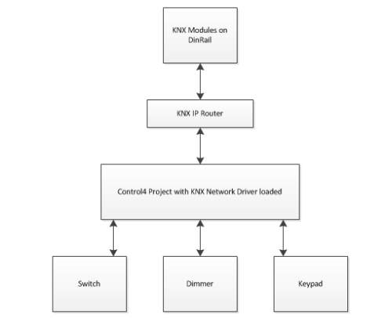
The driver uses the KNXnet/IP Routing protocol. As this is a IP multicast protocol, all KNXNet/IP routing devices on local network need to be setup to perform multicast routing whether using a single KNXNet/IP router or multiple. In addition, the network connecting the Control4 master controller and KNXNet/IP devices needs to properly support multicast and not filter the multicast routing address and port used in KNX configuration.
The KNXNet/IP Router devices need to be configured to not filter Group Addresses used by Control4 drivers. For most KNXNet/IP Routers this can be achieved in the following ways:
- Add Group Addresses used by Control4 drivers to KNXNet/IP Router filter tables in the ETS. In ETS5, this can be achieved by:
- Selecting ‘Pass through Line Coupler’ option in the ‘Properties’ view of a Group Address, or
- Adding Group Addresses (or Group Address Ranges) to ‘Manual Filter Table Entries’ in the ‘Properties -> Information’ view of the KNX Line.
- Configure the KNXNet/IP Router to route all group telegrams without considering filter table settings (most routers have the ‘Route’ option in ETS parameter setting). Please note that this option should be used with caution for installations with two or more KNX lines, since passing all group telegrams could lead to increased data traffic on the KNX lines.
Refer to your KNXNet/IP device's manual for more information on how to setup the multicast routing.
The preferred path in implementing KNX within Composer Pro is to add the KNX Routing Gateway driver to your project PRIOR to adding any KNX device drivers that you wish to control or monitor in your system. By adding the Routing Gateway driver first, all of the KNX device drivers subsequently added will be automatically bound correctly to the Routing Gateway driver in the Connections area of Composer Pro.
Any KNX device drivers added to the project prior to the KNX Routing Gateway driver will need to be manually bound in the Connections area of Composer Pro.
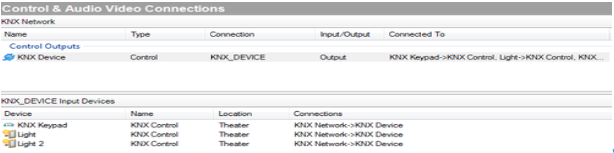
The following screen shot is populated KNX Routing Gateway Driver Properties page:
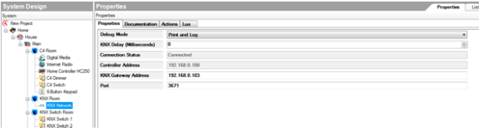
In the above example, the KNX Routing Gateway driver has been added to the project. Configuration points provided under Properties page include:
KNX Minimum Delay (ms): This is an editable time value that ranges from 25 to 500 milliseconds. This setting is the amount of time the driver will wait after receiving data from the KNX system before sending a KNX messages on the network. Messages will never be sent to the KNX Network faster than this time allows.
KNX Maximum Delay (ms): This is an editable time value that ranges from 50 to 500 milliseconds. This setting is the time allotted for a KNX command to be sent. For example, consider a Control4 project that has 10 KNX light switches. A lighting scene is configured to turn off all of the lights with the push of a keypad button. If the KNX delay value is set to 100 milliseconds, at most each off command will be sent at 100 millisecond intervals. The first command will be sent immediately upon the button push, followed by the second OFF command 100 milliseconds later and so on until all 10 OFF commands are sent.
KNX Multicast Address: This settings is the multicast address used by the installed KNX system for multicast communication. It defaults to 224.0.23.12, which is the officially registered IP multicast address for the KNX Association.
KNX Multicast Port: Default is 3671. This setting is the multicast port used by the installed KNX system for multicast communication. It defaults to 3671, which is the officially registered IP port for the KNX Association. Any networking changes that modify the default port value must be reflected here.
Use KNX Individual Address: This settings specifies if a KNX Individual Address will be assigned to Control4 system. This settings is useful for diagnostics purposes. If this property is set to Yes, All KNX message sent by this driver will have a source address. This address will be visible in the ETS Group Monitor tool making it easier to trace KNX messages sent from this driver. If this property is set to “No”, KNX messages will have the source individual address of a KNX IP router.
KNX Individual Address: This setting represents a “dummy” individual address that will be used as a source address for all messages sent by the driver and will be visible in the ETS Group Monitor tool. This should be an address of a “dummy” device on the backbone line (0.0.x). This property is visible only if Use KNX Individual Address property is set to Yes.
The Actions tab can be useful when trouble shooting or testing the KNX devices in your project.
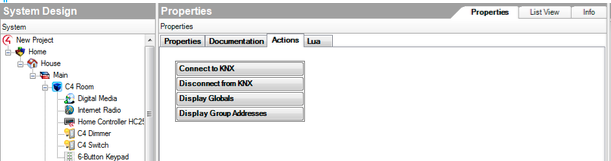
Display Globals: This button will display a list of all global values associated with the driver. This is particularly useful when debugging drivers.
Display Group Addresses: This button will display a list of all of the Group Address that the KNX Routing gateway driver is aware of. The addresses are displayed with their associated Datapoint and Group ID values.
Adding the KNX Network Driver
The first step in including KNX certified devices into your Control4 project is the inclusion of the KNX Network driver. The Network driver serves as a layer between the KNX modules and the control devices (dimmers, switch, keypad.) in your project. It handles the parsing of commands sent from the devices and passes them on via Ethernet connection to the KNX modules. Similarly, it handles communication from the modules to the control devices.
The preferred path in implementing KNX within Composer Pro is to add the KNX Network driver to your project PRIOR to adding any KNX device drivers that you wish to control or monitor in your system. By adding the Network driver first, all of the KNX device drivers subsequently added will be automatically bound correctly to the network driver in the Connections area of Composer Pro. Any KNX device drivers added to the project prior to the KNX Network driver will need to be manually bound in the Connections area of Composer Pro.
The following screen shot is populated KNX Network Driver Properties page:
In the above example, the KNX Network driver has been added to the project. Configuration points provided under Properties page include:
KNX Gateway Address: The address represents the physical IP address of the KNX Gateway device used in your project.
KNX Delay: This is an editable time value that ranges from 0 to 500 milliseconds. It defaults to 0, which is OFF. This setting represents the time allotted for a KNX command to be sent. For example, consider a Control4 project that has 10 KNX light switches. A lighting scene is configured to turn off all of the lights with the push of a keypad button. If the KNX delay value is set to 100 milliseconds at most each off command will be sent at 100 millisecond intervals. The first command will be sent immediately upon the button push, followed by the second OFF command 100 milliseconds later and so on until all 10 OFF commands are sent. Manipulation of this value is particularly useful when large amounts of devices are in a system. In our example, while the OFF commands are being sent, OFF notifications are being received. If the commands are sent too quickly, a situation could arise where commands get dropped due to the influx of inbound notifications. Manipulation of this value is recommended when a performance lag occurs or commands are dropped.
Connection Status: This field is read only. It provides the current connection status with the KNX Server. It also provides error messages in the event that a connection issue arises. Supported errors include:
- Connection with KNXnet/IP Server successful.
- The KNXnet/IP Server device cannot find an active data connection with the specified ID."
- The requested connection type is not supported by the KNXnet/IP Server device
- One or more requested connection options are not supported by the KNXnet/IP Server device." The KNXnet/IP Server device cannot accept the new data connection because its maximum amount of concurrent connections is already occupied."
- The KNXnet/IP Server device detects an error concerning the data connection with the specified ID.
- The KNXnet/IP Server device detects an error concerning the KNX subnetwork connection with the specified ID."
- Unknown status from KNXnet/IP Server device (0x" .. string.format("%02x", status)
Port: Default is 3671 – This value represents the port used by the KNX network driver for communication. Any networking changes that modify the default port value must be reflected here.
Controller Address: This a read only field that provides the address of the KNX Controller
The Actions tab provides the ability to quickly connect to and disconnect from the KNX network driver. This can be useful when trouble shooting or testing the KNX devices in your project, especially if timers are used. Note that disconnecting through the button on the Actions tab requires you to re-connect through this screen.
Display Globals: This button will display a list of all global values associated with the driver. This is particularly useful when debugging drivers.
Display Group Addresses: This button will display a list of all of the Group Address that the network driver is aware of. The addresses are displayed with their associated Datapoint and Group ID values.
Linking C4 Devices to KNX Device Group Objects
In order to configure KNX devices with Control4, you will need to obtain a list of the device’s Group Objects and their Group Addresses. This list can either come from your KNX dealer, EIB Installer or through the use of an approved Engineering Tool Software (ETS) software/database program that is compatible with the KNX standard.
Each of the Control4 devices in your project will need to be linked to the KNX Group Objects that are available for that device. This is accomplished through the Properties page in Composer Pro. For purposes of example, we will use the switch driver to assign a Function Group Address.
Begin by adding the KNX Switch driver to your project. Open Composer Pro and find the driver under the Items area. Click on the Search tab and select Online. Using Type of “Light (v2)” and the Manufacturer of “KNX” you will see the switch and dimmer drivers.
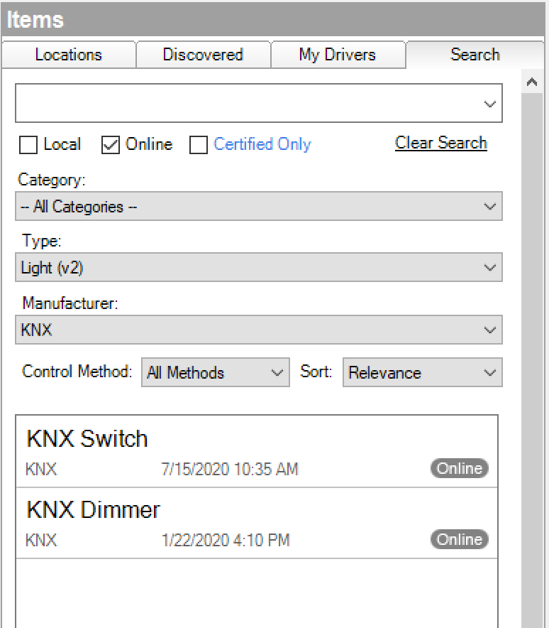
Double click on the Switch driver to add it to your project. Clicking on the properties for the switch device will display the following screen:
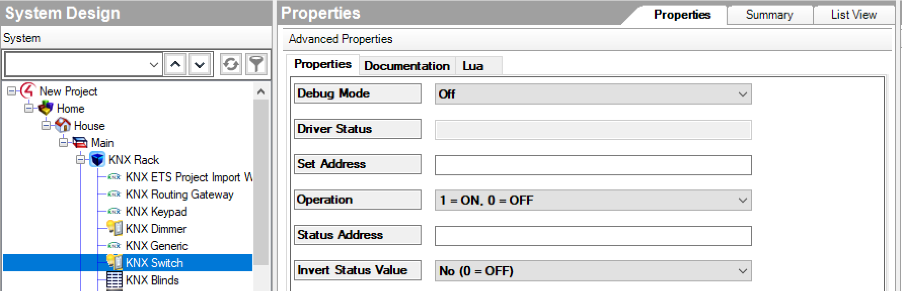
It is important to understand that each "Address" property for a driver needs to be linked to a KNX Device’s Group Object Function. The value that is used here is the Group Address associated with the Group Object. In our example, our switch supports two functions: switching (ON/OFF) and switching feedback (ON/OFF status) objects.
To link the ON/OFF switching functionality to this device, it is necessary to enter the KNX Device’s Switching Object Group Address. This is a unique value that is configured in your KNX configuration. Based on our example KNX project, the current configuration for this is a value of 0/0/10. By entering this value in the Set Address field, our switch now has the ability to turn a device ON and OFF.
The switch driver also supports the Feedback (Status Address). This is a function that, when enabled, allows for the switch to communicate its state over the KNX network. Once again, this is a unique value to your KNX configuration. Based on our example KNX project, the current configuration for this is a value of 0/0/11. By entering this value, our switch will be able to get feedback from the KNX system which can be displayed on touchscreen and other devices.
An Important Note about Status Address Settings For some KNX devices, the Feedback functionality may not be enabled by default. It is important to validate that Feedback is enabled and that a Group Address is linked with the Feedback Group Object through the ETS tool or your KNX Installer. If Feedback is not enabled, it will be difficult to monitor/troubleshoot your KNX device configuration. Control4 recommends Feedback being added and enabled for all devices.
In addition to enabling the feedback functionality, it is recommended to set the "Read" flag (R) for all status Group Objects that are used by the Control4 drivers. The KNX Routing Gateway driver will issue read requests for all status addresses found in the project at startup. A read request will only work if a corresponding Group Object has its Read flag set in the ETS. The Read flag enables the object value to be read out i.e. a response telegram is only sent after a read telegram if the read flag of the object has been set.
The remainder of this document will outline the steps required to add a KNX supported dimmer and keypad to your project. As you add KNX devices to your project you will need to know beforehand the Object Function and Group Address Values that are associated with the device. These values represent commands or notifications that are supported under the KNX architecture for the device. It is not recommended to proceed with the implementation unless these values are obtained.
Adding a Dimmer
To add a KNX enabled Dimmer to your project, you will need to add the knx_dimmer.c4i driver. You will need to add the knx_dimmer.c4i file to directory path for your other Lua based drivers.
This is typically: C:\Users\user\Documents\Control4\Drivers
Once added, you can open Composer Pro and find the driver under the Items area. Click on the Search tab and select Local Database. Using Device Type of “Light” and the Manufacturer of “KNX” you will see the switch and dimmer drivers.
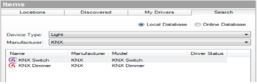
Double click on the Dimmer driver to add it to your project. Clicking on the properties for the switch device will display the following screen:
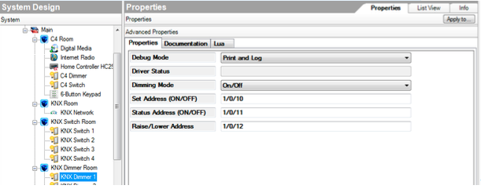
Driver Status – This field displays an error when an invalid group address is entered. Future implementation will include handling of more error messages provided by the network driver.
Dimming Mode: The Dimming Mode button supports two types of dimmer functionality: On/Off or Set Level.
On/Off is useful for dimmers that only have the ability to ramp up to 100% and then back down to 0% If your dimmer cannot ramp to a specified level, this value should be set to ON/Off.
The Level value is the default value of the button. It should be set for dimmers that can ramp to a provided value. The Dimmer properties screen also allows you to enter the Set Address values for your Dimmer.
Feedback is accomplished with the Dimmer driver using the Status Address field. Adding the correct Group Address for this functionality will enable the Dimmer to provide Feedback on its current level of lighting. Note: The version of this release currently does not support ramp-to-level functionality.
Adding a Keypad
Open ComposerPro and find the driver under the Items area. Click on the Search tab and select Online. Search for "KNX Keypad" using Manufacturer of “KNX” and you will see the Keypad driver.
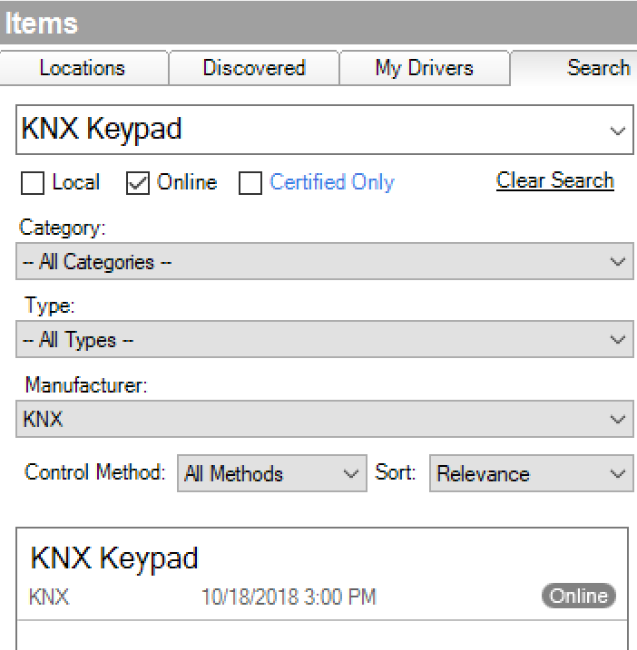
Double click on the Keypad driver to add it to your project.
The Keypad driver can be configured for one to ten buttons. Each button can be mapped to a KNX button on a keypad. You are not restricted to mapping all of the buttons to the same keypad. Each button is mapped based on the addressed used in the Button Address parameter.
The Keypad driver allows you to capture KNX button press events that (through programming and connections) can be used to control other devices in the Control4 project.
The button mode is used to configure the button to match the corresponding KNX button configuration.
Through Control4 programming and connections they can also initiate Actions such as ramping up and down audio volume or lighting scenes. For this reason it is important that you have the ability to configure your KNX Configuration and Group Address values for your keypad so it can accomplish everything that you want the keypad to do.
For example, for "Press/Release (On/Off)" button mode, the parameters for the keypad must be set to “Switching” in the ETS software and a Button Press must be set to ON and Button Release set to OFF. Otherwise, Programming and control connections in Composer Pro will not work.
Clicking on the properties for the Keypad will display the following screen:
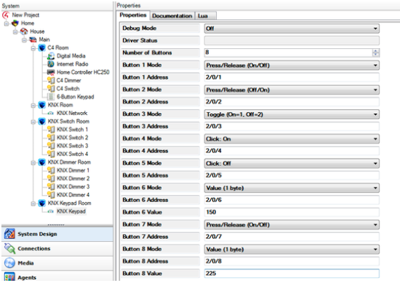
The example above shows the configured properties for an eight button keypad utilizing eight button configurations. Currently, ten is the maximum amount of buttons supported. Each of the buttons on a keypad can have the following fields: Button Name, Button Mode, Button Address and Button Value.
Button Name - Name or short description of the button. This field will be used for the name of the control connections, therefore it is recommended to set it to a meaningfull value.
Button Mode – The drop down box allows for the selection of several button press configurations. Two important factors should be considered when selecting a button mode:
- How you plan on using Control4 programming and connections in conjunction with button press and/or button click events.
- The configuration for the buttons on your KNX enabled Keypad.
The following modes are provided if you wish to create programming based on Button Press and Release events:
Press/Release (On/Off) – This mode is selected when a button press sends a value of 1 from KNX and a value of 0 is sent from KNX upon release.
Press/Release (Off/On) – This mode is selected when a button press sends a value of 0 from KNX and a value of 1 is sent from KNX upon release.
The following table outlines the Mode to use based on the value received from KNX:
| Mode | Sent Upon Press | Sent Upon Release |
|---|---|---|
| On/Off | 1 | 0 |
| Off/On | 0 | 1 |
The following modes are provided if you wish to create programming based on Button Click events:
Click: On – The click event is fired when a value of 1 is received from KNX.
Click: Off - The click event is fired when a value of 0 is received from KNX.
Toggle – The click event is fired when any value is received from KNX.
Value (1 byte) – The click event is fired when the defined is received from KNX
| Mode | 0 | 1 | Defined Value |
|---|---|---|---|
| Click: On | X | ||
| Click: Off | X | ||
| Toggle | X | X | |
| Value (1 Byte ) | X |
Control Bindings
KNX Keypad driver has available BUTTON_LINK, RELAY and CONTACT_SENSOR connections for each button as way of controlling other devices in the Control4 system. These connections are dynamically created depending on the number of buttons and their modes.
As an example, we will use a KNX button to toggle a lighting scene using the BUTTON_LINK connection. The KNX button is configured to send On (1) value on a press and Off (0) value on a release. Corresponding button mode in the driver for this configuration is "Press/Release (On/Off)".
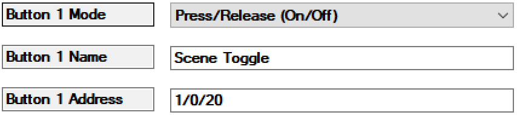
After configuring the button 1 in the Properties page, navigate to Connections page and click on the KNX Keypad device. BUTTON_LINK connection will become available for this button. Connect it to a Toggle Button Link of a lighting scene. Now, every time a customer holds the button, the scene will ramp in the opposite direction.
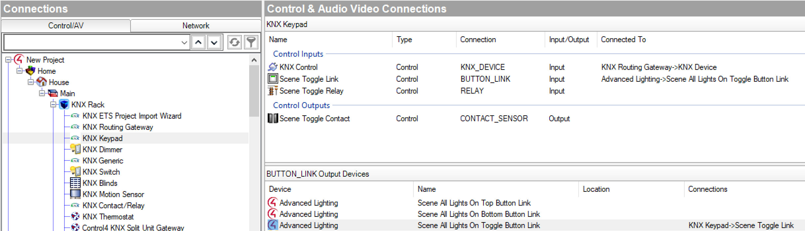
Adding the KNX Generic Driver
Open Composer Pro and find the driver under the Items area. Click on the Search tab and select Online. Type "KNX Generic" in the Search field and you will see the Generic driver.
The generic driver is included as a means to control a device or get data from a device that currently has no driver. The driver provides a useful means to assign “Channels” of control which utilize KNX addresses and DataPoint Types to send KNX values to a device, receive KNX values or statuses from a device.
Once the driver is added, it is configured under the Lua Properties tab. When all of the desired control Channels have been configured, advanced programming (Actions, Events & Variables) can be created within ComposerPro to control a device as well as handle feedback from a devices.
Configuring the KNX Generic Driver Once the Generic Driver has been added to your project you can open the driver’s properties page. This page is where all of the driver configuration will take place. The Properties page supports the configuration of up to eight control “Channels”. The driver defaults to having all eight available channels disabled. A channel is enabled by selecting its Data Point Type. Each channel has (at a minimum) the following fields:
Channel # Name: This field allows you to provide a name or a description of the Channel.
Channel # Data Point Type This field supports the assignment of the desired KNX Data Point Type (DPT) value. DPTs currently supported include all DPTs listed in the API and Datapoint Types Guide.
Channel # Address – This field contains the device’s KNX group address.
Other properties depend on the selected Data Point Type, as it will be shown in the examples bellow.
For purposes of example, we’ll use the Generic Driver to control a blind. To configure Channel 1 to use Data Point Type 1 for devices that have a Group Address of 1/0/10 our Properties page will look like this:
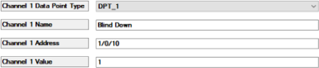
Note that in our example above we are assigning a Channel 1 Value of 1. Based on KNX documentation, we know that there are two possible values for Data Point Type 1: 0 or 1.
For Channel 2, we need to use Data Point Type value 3. DPT 3 supports directional control (down & up) as well as incremental changes in direction. Our Channel 2 configuration looks like this:
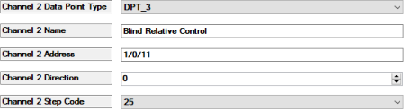
We are passing a direction value of 0(up) for this channel. We are also supplying a Step Code value. This value represents the percentage of change channel 2 will support. Our example shows 25%. This means that the control provided by Channel 2 will be an increase in our blind level by 25% from its present position.
For Channel 3, we’ll establish some scheduling control for our blind by adding Day, Hour, Minute and Second values by using Data Point Value 10.
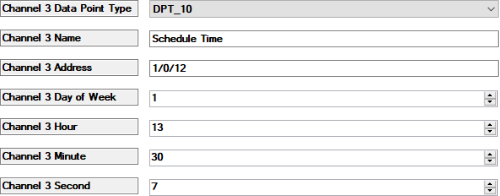
Based on the values entered above, the current schedule value for Channel 3 is Monday (1), 3:30:07 PM (15) (30) (7). Note that a day value of 0 results in no day being represented.
We can expand on our scheduling capabilities by using Data Point Value 11 which supports Day, Month and Year values. For example, a date value of July 6, 2013 would look like this:
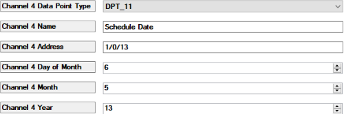
Now that we have configured all four Channels for this instance of the Generic driver the channels can be tested under the Actions tab:
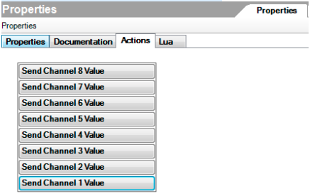
The Actions tab default to displaying all eight Channel configurations. By clicking on each of the four respective channels which we have configured we can test the configuration of the Channel itself.
Composer Programming and the KNX Generic Driver One of the main purposes behind providing the KNX Generic driver is to support control of a device without having to write a dedicated driver for that device. Using the programming capabilities found in ComposerPro, we can trigger control scenarios based on four KNX based events. These events are:
Matching Data Received – This event occurs when the value that is assigned to a specific channel is received from the KNX network. For example, we configure Channel 1 with a value of 1. When a 1 is received from the KNX network for this channel, this event can be used for programming purposes.
Data Sent to KNX – This event occurs when the data value for a channel is sent to the KNX network from this driver. For example, when executing a "Send Channel X Value" action.
Data Received from KNX – This event is similar to Matching Data Received in that it is based on receiving data from the KNX network. This event is triggered whenever any data is received for a channel from the KNX network.
Read Request Received - This event is triggered when a read request is received from the KNX network for a Group Address assigned to a channel.
Programming events are available when you click on programming in ComposerPro for the KNX Generic Driver.
Let’s consider some simple programming scenarios based on events we can use with the way we have configured the KNX Generic Driver. In our first example, we have created programming to raise our blinds up when Channel 1 is activated. It will pass a value of 1 to the KNX network and, through programming, cause our blinds to raise:
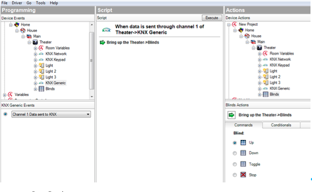
We can also base programming off of receiving data from the KNX network. Using Channel 1 as an example again, if we receive a value other than one we can trigger a programming event using the “Data Received from KNX” event definition. In the example below, if we receive any value other than a 1 from the network through Channel 1 we will lower the blinds:
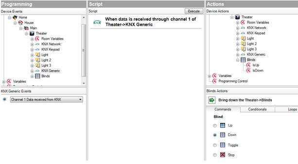
Note that this example is similar to using the “Matching Data Received” event definition. If we were using “Matching Data Received” (a value of 1 in our example) we would program our blinds to rise.
Since we have configured our generic Driver with some scheduling related Data point Types we can program an event off of a time. For example, if we use “Matching Data Received” for Channel 3 we can raise or lower our blinds at a certain time. We configured Channel 3’s value for Monday 3:30:07 PM or (1) (15) (30) (7). The programming below will lower our blinds (if they are up) when the matching values are received from the KNX network:
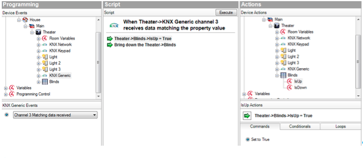
Using Variables with the KNX Generic Driver If you open the KNX Generic Driver under Programming, you will see all of the variables that are currently available for KNX. By default, Programming populates all of the available variables for a channel. It also provides these variables for a complete set of eight channels. For example, the variables available for Channel_1 include:
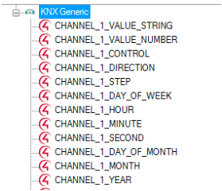
Note that while all variables are displayed, only variables applicable to the Data Point Type configured for the channel under the Properties page will support programming. For example, the CHANNEL_1_STEP variable for Channel 1 will not work if DPT_1 is configured.
Through the use of variable, it is possible to base programming off sending data to KNX, receiving data from KNX and receiving matching data from KNX. For example, the screen shot below shows variable-based programming when data is sent through Channel 1 of our KNX Generic Driver. Based on the information in the previous section, Channel 1 uses DPT_1 which in turn, supports passing values 0 & 1 to KNX.
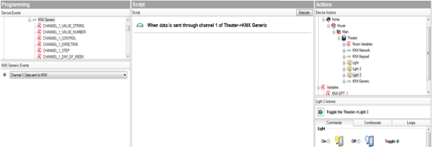
In the example above, when data is sent to KNX through Channel 1 we will toggle Light 3 in the Theater Room through the use of a Command. It is worth noting that when using variable based programming in conjunction with the “Data Received from KNX” generic event the value that will be used by the variable is that actual value received from KNX as opposed to the value configured for the channel in the Properties page. Conditionals and Loops are also available as programming options.
API and Datapoint Types
Introduction to KNX Driver Development
Control4 supports integration with device drivers using the standardized KNX control network topology. The purpose of this section is to provide a starting point for third party and partner level KNX driver development. Its focus is on defining an API layer that is available for a KNX driver to use in order to communicate with both the KNX Network layer as it resides within the Control4 environment, as well as other KNX devices.
The content defines each of the APIs with a description, parameter list and an example. Further examples are referenced within the KNX drivers provided in SDK. It is recommended that these drivers be reviewed in conjunction with this document before beginning KNX driver development. Finally, all of the currently supported Datapoint Types (DPTs) are defined at the end of the document.
Note that this content is intended as a supplement to the existing Control4 DriverWorks SDK documentation. Its scope is KNX specific and it assumes knowledge in KNX topology and standards exists. Also, if you are new to writing drivers targeted for the Control4 environment, it is strongly recommended that a review of the DriverWorks SDK occur before continuing.
The Role of SendToProxy
Before discussing the use of the APIs, it is important to understand several concepts that they all share. As you review the API content you will notice that API’s are sent from your driver using the standard Control4 function: SendToProxy. SendToProxy requires two additional parameters in addition to the API. These include the KNX connection value and a table of parameters. For example:
C4:SendToProxy(<connection value>,”<command>”,<table of parameters>)
or
C4:SendToProxy(1,”ADD-GROUP_ITEM”,tParams)
The connection value in the examples above is the value assigned to the KNX ID value in the connections section of your driver. The <id>1</id> line in the sample below contains the connection value required by SendToProxy. The code example to the right comes from the KNX Network driver:
<connection>
<id>1</id>
<facing>6</facing>
<connectionname>KNX Control</connectionname>
<type>1</type>
<consumer>True</consumer>
<audiosource>False</audiosource>
<videosource>False</videosource>
<linelevel>True</linelevel>
<classes>
<class>
<classname>KNX_DEVICE</classname>
<autobind>True</autobind>
</class>
</classes>
</connection>
The table of parameters required by SendToProxy consists of a set (or at times a subset) of KNX Object Functions that are unique to your driver, the device it supports and the Datapoint Types you are using. The table elements are:
| Element | Description |
|---|---|
GROUP_ADDRESS |
This is the KNX Group Address for the Object Function. |
DEVICE_ID |
This is the Device ID of your driver. |
PROPERTY |
This is the Property Name in Composer where the Group Address is stored. |
DATA_POINT_TYPE |
The Data Point Type (DPT) required by the Object Function. |
The example to the right shows how the table elements are assembled in conjunction with a connection Id value of 1 and the ADD_GROUP_ITEM API:
local tParams = {}
tParams["GROUP_ADDRESS"] = Properties[“Channel 1 Address”]
tParams["DEVICE_ID"] = C4:GetDeviceID()
tParams["PROPERTY"] = “Channel 1 Address”
tParams["DATA_POINT_TYPE"] = “DPT_1”
C4:SendToProxy(1, ”ADD_GROUP_ITEM”, tParams)
ADD_GROUP_ITEM
This function is used to register each of KNX Object Functions required for your driver, with the KNX Network driver.
Available from 8.0
Signature
C4:SendToProxy(num, "ADD_GROUP_ITEM", tParams)
| Parameters | Description |
|---|---|
GROUP_ADDRESS |
This is the KNX Group Address for the Object Function. |
DEVICE_ID |
This is the Device ID of your driver. |
PROPERTY |
This is the Property Name in Composer where the Group Address is stored. |
DATA_POINT_TYPE |
The Data Point Type (DPT) required by the Object Function. |
STARTUP_READ |
Optional. If false, Group Address will not be read on startup. If omitted or set to true, Group Address will be read on startup. |
Example
The example to the right shows how the table elements are assembled in conjunction with a connection Id value of 1 and the ADD_GROUP_ITEM API:
local tParams = {}
tParams["GROUP_ADDRESS"] = Properties[“Channel 1 Address”]
tParams["DEVICE_ID"] = C4:GetDeviceID()
tParams["PROPERTY"] = “Channel 1 Address”
tParams["DATA_POINT_TYPE"] = “DPT_1”
C4:SendToProxy(1, ”ADD_GROUP_ITEM”, tParams)
CLEAR_GROUP_ITEM
This function is used to remove all of the group items (tParams) that have been previously registered with the KNX Network driver.
Available from 8.0
Signature
C4:SendToProxy(num,”CLEAR_GROUP_ITEM”,tParams)
| Parameters | Description |
|---|---|
DEVICE_ID |
This is the Device ID of your driver. |
Example
This example was taken from the KNX Generic driver:
local tParams = {}
tParams["DEVICE_ID"] = C4:GetDeviceID()
C4:SendToProxy(1, ”CLEAR_GROUP_ITEM”, tParams)
DATA_FROM_KNX
This command is sent from the KNX network driver (KNX Routing Gateway or KNX Network) to a KNX driver when data is received from KNX for a registered Group Address which was previously registered with a AddGroupItem command.
Available from 8.0
Parameters
| Parameters | Description |
|---|---|
GROUP_ADDRESS |
This is the KNX Group Address associated with the data that is received from the KNX. |
RESPONSE |
Specifies if the received data is a response to a read request. |
Note that all other parameters representing data from the KNX are dependent on the DPT being used as specified in the AddGroupItem command.
Example
To the right is an example of a DATA_FROM_KNX handler of the KNX Switch driver. The driver previously registered a Group Address specified in the Status Address property with the AddGroupItem command.
function EX_CMD.DATA_FROM_KNX(tParams)
local groupID = trim(tParams["GROUP_ADDRESS"])
local value = tonumber(tParams["VALUE"])
if (not groupID) or (not value) then return end
if (groupID == Properties["Status Address"]) then
if IsStatusInverted() then
value = ((value > 0) and 0) or 1
end
if (value > 0) then
gLightLevel = 100
else
gLightLevel = 0
end
SetProxyLightLevel()
end
end
GET_NETWORK_VERSION
This function allows you to associate your driver to a specific version of the KNX Network driver. It will provide your driver with the network version of the KNX Network Driver. Use this API only if your driver requires a specific version of the KNX Network driver.
Upon receiving the GET_NETWORK_VERSION request from your driver, The Network Driver will send a NETWORK_VERSION command back to your driver. Your driver will need to handle the NETWORK_VERSION command within the ExecuteCommand function.
Available from 8.0
Signature
C4:SendToProxy(num, ”GET_NETWORK_VERSION”, tParams)
| Parameters | Description |
|---|---|
DEVICE_ID |
This is the Device ID of your driver. |
Example
Example 1 details sending the GET_NETWORK_VERSION function to the network Driver:
--Example 1
local tParams = {}
tParams["DEVICE_ID"] = C4:GetDeviceID()
C4:SendToProxy(1, "GET_NETWORK_VERSION", tParams)
Example 2 details how your driver should receive the response from the Network Driver:
-- Example 2
function EX_CMD.NETWORK_VERSION(tParams)
dbgFunction("EX_CMD.NETWORK_VERSION()")
dbgParams(tParams)
gNetworkVersion = tonumber(tParams["VERSION"])
if (gNetworkVersion < SUPPORTED_NETWORK_VERSION) then
local errorMessage = "WARNING: KNX Network Driver version = " .. gNetworkVersion .. ". KNX Network Driver version should be " .. SUPPORTED_NETWORK_VERSION .. " or greater."
C4:UpdateProperty("Driver Status", errorMessage)
dbg(errorMessage)
end
end
KNX_READ_REQUEST
This command is sent from the KNX network driver (KNX Routing Gateway or KNX Network) to a KNX driver when a read request is received for a registered Group Address which was previously registered with a AddGroupItem command.
Available from 8.0
Parameters
| Parameters | Description |
|---|---|
GROUP_ADDRESS |
This is the KNX Group Address for which a read request is issued from the KNX. |
Example
To the right is an example of a KNX_READ_REQUEST handler of the KNX Generic driver. The driver previously registered a Group Address specified in the Status Address property with the AddGroupItem command.
function EX_CMD.KNX_READ_REQUEST(tParams)
local groupID = trim(tParams["GROUP_ADDRESS"])
for channelNumber in pairs(ChannelIdToNumberTable(groupID)) do
FireReadRequestEvent(channelNumber)
end
end
REMOVE_GROUP_ITEM
This function is used to remove a pre-registered group item with the KNX network driver.
Available from 8.0
Signature
C4:SendToProxy(num, ”REMOVE_GROUP_ITEM”, tParams)
| Parameters | Description |
|---|---|
GROUP_ADDRESS |
This is the KNX Group Address for the Object Function. |
DEVICE_ID |
This is the Device ID of your driver. |
PROPERTY |
This is the Property Name in Composer where the Group Address is stored. |
Example
local tParams = {}
tParams["GROUP_ADDRESS"] = Properties[“Channel 1 Address”]
tParams["DEVICE_ID"] = C4:GetDeviceID()
tParams["PROPERTY"] = “Channel 1 Address”
C4:SendToProxy(1, ”REMOVE_GROUP_ITEM”, tParams)
REQUEST_STATUS
This function allows you to query the KNX system for the status of an Object Function. The KNX Dimmer and KNX Switch drivers provide examples of using this function.
Available from 8.0
Signature
C4:SendToProxy(num, ”REQUEST_STATUS”, tParams)
| Parameters | Description |
|---|---|
GROUP_ADDRESS |
This is the KNX Group Address for the Object Function. |
Example
local tParams = {}
tParams["GROUP_ADDRESS"] = Properties[“Channel 1 Address”]
C4:SendToProxy(1, ”REQUEST_STATUS”, tParams)
SEND_TO_KNX
This function is used to send commands to the KNX system based on Data Point Types (DPTs) and group address.
Available from 8.0
Signature
C4:SendToProxy(1, ”SEND_TO_KNX”, tParams)
| Parameters | Description |
|---|---|
GROUP_ADDRESS |
This is the KNX Group Address for the Object Function. |
DATA_POINT_TYPE |
The Data Point Type (DPT) required by the Object Function. |
Note that all other potential parameters are dependent on the DPT being used.
Example
local tParams = {}
tParams["GROUP_ADDRESS"] = Properties[“Channel 1 Address”]
tParams["DATA_POINT_TYPE"] = “DPT_1”
tParams[“VALUE”] = 1
C4:SendToProxy(1, ”SEND_TO_KNX”, tParams)
UPDATE_GROUP_ITEM
This function is used to update pre-registered group items with the KNX network driver.
Available from 8.0
Signature
C4:SendToProxy(num, ”UPDATE_GROUP_ITEM”, tParams)
| Parameters | Description |
|---|---|
GROUP_ADDRESS |
This is the KNX Group Address for the Object Function. |
DEVICE_ID |
This is the Device ID of your driver. |
PROPERTY |
This is the Property Name in Composer where the Group Address is stored. |
DATA_POINT_TYPE |
The Data Point Type (DPT) required by the Object Function. |
Example
Note that in the example to the right we are changing “Channel 1 Address” Datapoint Type to DPT_3.
local tParams = {}
tParams["GROUP_ADDRESS"] = Properties[“Channel 1 Address”]
tParams["DEVICE_ID"] = C4:GetDeviceID()
tParams["PROPERTY"] = “Channel 1 Address”
tParams["DATA_POINT_TYPE"] = “DPT_3”
C4:SendToProxy(1, ”UPDATE_GROUP_ITEM”, tParams)
KNX Datapoint Type Overview
The following section lists the Datapoint Types supported in this version of the Control4 KNX SDK. It is important to select the appropriate Datapoint Type. This decision should be based on two important factors:
- What value(s) does your KNX device expect to receive?
- What format do those values need to be in?
Knowledge of the device you are creating a driver for is important as each of the Datapoint Types differ in value and value formatting. This section is meant to be used as a reference only. Each of the Datapoint Types listed below is outlined in detail in the following document provided by KNX: KNX System Specification Internetworking Datapoint Types.
This can be found at www.support.knx.org
DPT_1
Boolean DataPoint Type, such as switch on or off.
| Parameters | Description |
|---|---|
| VALUE | Boolean Value - 0 or 1 |
Example
tParams["GROUP_ADDRESS"] = Properties[“Channel 1 Address”]
tParams["DATA_POINT_TYPE"] = “DPT_1”
tParams[“VALUE”] = 1
C4:SendToProxy(1, ”SEND_TO_KNX”, tParams)
DPT_2
Boolean DataPoint Type with a control part.
| Parameters | Description |
|---|---|
| CONTROL | 0 for No Control 1 for Control |
| VALUE | Boolean Value - 0 or 1 |
Example
tParams["GROUP_ADDRESS"] = Properties[“Channel 1 Address”]
tParams["DATA_POINT_TYPE"] = “DPT_2”
tParams["CONTROL"] = 0
tParams["VALUE"] = 1
C4:SendToProxy(1, ”SEND_TO_KNX”, tParams)
DPT_3
This Datapoint Type is commonly used in cases where a value of 0 or 1 is passed to decrease or increase a value, usually associated with light brightness.
| Parameters | Description |
|---|---|
| DIRECTION | 0 - Decrease (for lighting), Up (for blind movement) 1 - Increase (for lighting), Down (for blind movement) |
| STEP_CODE | The amount of intervals into which the range of 0%..100% is subdivided, or the break indication. |
Example
tParams["GROUP_ADDRESS"] = Properties[“Channel 1 Address”]
tParams["DATA_POINT_TYPE"] = “DPT_3”
-- Decrease 100%
tParams["DIRECTION"] = 0
tParams["STEP_CODE"] = 1
C4:SendToProxy(1, ”SEND_TO_KNX”, tParams)
DPT_4
This DataPoint Type is commonly used for passing a character.
| Parameters | Description |
|---|---|
| VALUE | 0 through 255. 8 bit value representing a character set. |
Example
tParams["GROUP_ADDRESS"] = Properties[“Channel 1 Address”]
tParams["DATA_POINT_TYPE"] = “DPT_4”
tParams["VALUE"] = "A"
C4:SendToProxy(1, ”SEND_TO_KNX”, tParams)
DPT_5
This DataPoint Type is commonly used when passing an 8 bit unsigned value.
| Parameters | Description |
|---|---|
| VALUE | 0 through 255. 8 bit unsigned value. |
Example
tParams["GROUP_ADDRESS"] = Properties[“Channel 1 Address”]
tParams["DATA_POINT_TYPE"] = “DPT_5”
tParams["VALUE"] = "127"
C4:SendToProxy(1, ”SEND_TO_KNX”, tParams)
DPT_6
This DataPoint Type is commonly used when passing an 8 bit signed relative value.
| Parameters | Description |
|---|---|
| VALUE | -128 through 127. 8 bit relative value. |
Example
tParams["GROUP_ADDRESS"] = Properties[“Channel 1 Address”]
tParams["DATA_POINT_TYPE"] = “DPT_6”
tParams["VALUE"] = -100
C4:SendToProxy(1, ”SEND_TO_KNX”, tParams)
DPT_7
This DataPoint Type is commonly used when passing a 2 octet unsigned value.
| Parameters | Description |
|---|---|
| VALUE | 0 – 65535. 2 octet unsigned value. |
Example
tParams["GROUP_ADDRESS"] = Properties[“Channel 1 Address”]
tParams["DATA_POINT_TYPE"] = “DPT_7”
tParams["VALUE"] = 10094
C4:SendToProxy(1, ”SEND_TO_KNX”, tParams)
DPT_8
This DataPoint Type is commonly used when passing a 2 octet unsigned value.
| Parameters | Description |
|---|---|
| VALUE | -32 768 through 32 767. 2 octet signed value. |
Example
tParams["GROUP_ADDRESS"] = Properties[“Channel 1 Address”]
tParams["DATA_POINT_TYPE"] = “DPT_8”
tParams["VALUE"] = -10094
C4:SendToProxy(1, ”SEND_TO_KNX”, tParams)
DPT_9
This DataPoint Type is commonly used when a 2-octet float value is passed (e.g. temperature).
| Parameters | Description |
|---|---|
| VALUE | -671088,64 - 670760,96. 2 octet float value. |
Example
tParams["GROUP_ADDRESS"] = Properties[“Channel 1 Address”]
tParams["DATA_POINT_TYPE"] = “DPT_9”
tParams["VALUE"] = 1584
C4:SendToProxy(1, ”SEND_TO_KNX”, tParams)
DPT_10
This DataPoint Type is commonly used when a value representing time (including day of the week) is passed.
| Parameters | Description |
|---|---|
| DAY | 0 – 7. 0=No day. 1=Monday |
| HOUR | 0 – 23 |
| MINUTE | 0 – 59 |
| SECOND | 0 – 59 |
Example
tParams["GROUP_ADDRESS"] = Properties[“Channel 1 Address”]
tParams["DATA_POINT_TYPE"] = “DPT_10”
tParams["DAY"] = 1
tParams["HOUR"] = 12
tParams["MINUTE"] = 30
tParams["SECOND"] = 45
C4:SendToProxy(1, ”SEND_TO_KNX”, tParams)
DPT_11
This DataPoint Type is commonly used when a value representing date is passed.
| Parameters | Description |
|---|---|
| DAY | 1 through 31 |
| MONTH | 1 through 12 |
| YEAR | 0 through 99 |
Example
tParams["GROUP_ADDRESS"] = Properties[“Channel 1 Address”]
tParams["DATA_POINT_TYPE"] = “DPT_11”
tParams["YEAR"] = 1
tParams["MONTH"] = 6
tParams["DAY"] = 13
C4:SendToProxy(1, ”SEND_TO_KNX”, tParams)
DPT_12
This DataPoint Type is commonly used when passing a 4 octet unsigned value.
| Parameters | Description |
|---|---|
| VALUE | 0 – 4,294,967,295. 4 octet unsigned value. |
Example
tParams["GROUP_ADDRESS"] = Properties[“Channel 1 Address”]
tParams["DATA_POINT_TYPE"] = “DPT_12”
tParams["VALUE"] = 1000
C4:SendToProxy(1, ”SEND_TO_KNX”, tParams)
DPT_13
This DataPoint Type is commonly used when passing a 4 octet signed value.
| Parameters | Description |
|---|---|
| VALUE | -2,147,483,648 - 2,147,483,647. 4 octet signed value. |
Example
tParams["GROUP_ADDRESS"] = Properties[“Channel 1 Address”]
tParams["DATA_POINT_TYPE"] = “DPT_13”
tParams["VALUE"] = -1000
C4:SendToProxy(1, ”SEND_TO_KNX”, tParams)
DPT_14
This DataPoint Type is commonly used when passing a 4 octet float value.
| Parameters | Description |
|---|---|
| num | -2.14748E009 - +2.14748E009. 4 octet float value. |
Example
tParams["GROUP_ADDRESS"] = Properties[“Channel 1 Address”]
tParams["DATA_POINT_TYPE"] = “DPT_14”
tParams["VALUE"] = -1.23658E009
C4:SendToProxy(1, ”SEND_TO_KNX”, tParams)
DPT_15
Currently not supported.
DPT_16
| Parameters | Description |
|---|---|
| VALUE | 14 X TTTTTT (T = Text String) |
Example
tParams["GROUP_ADDRESS"] = Properties[“Channel 1 Address”]
tParams["DATA_POINT_TYPE"] = “DPT_16”
tParams["VALUE"] = "Hello World"
C4:SendToProxy(1, ”SEND_TO_KNX”, tParams)
DPT_17
This DataPoint Type is commonly used for passing a scene number value. The minimum scene number is 0 and the maximum scene number is 63.
| Parameters | Description |
|---|---|
| VALUE | Scene number 0 - 63. |
Example
tParams["GROUP_ADDRESS"] = Properties[“Channel 1 Address”]
tParams["DATA_POINT_TYPE"] = “DPT_17”
-- Scene number
tParams["VALUE"] = 32
C4:SendToProxy(1, ”SEND_TO_KNX”, tParams)
DPT_18
This DataPoint Type is commonly used for scene control. A scene control can be used to activate or learn the corresponding scene number. The range for scene numbers is from 0 to 63.
| Parameters | Description |
|---|---|
| VALUE | Scene number 0 - 63. |
| CONTROL | 0 = activate the scene corresponding to the field Scene Number. 1 = learn the scene corresponding to the field Scene Number. |
Example
tParams["GROUP_ADDRESS"] = Properties[“Channel 1 Address”]
tParams["DATA_POINT_TYPE"] = “DPT_18”
-- Scene number
tParams["VALUE"] = 32
-- Activate scene
tParams["CONTROL"] = 0
C4:SendToProxy(1, ”SEND_TO_KNX”, tParams)
DPT_19
This DataPoint Type is used for passing Date and Time information.
Available from KNX Routing Gateway driver version 44.
| Parameters | Description |
|---|---|
| YEAR | Year in range from 1900 to 2155 or nil if not used |
| MONTH | 1 - 12 or nil if date (month and day of month) is not used |
| DAY | 1 - 31 or nil if date (month and day of month) is not used |
| WEEKDAY | 0 - 7 or nil if day of week is not used |
| HOUR | 0 - 24 or nil if time (hours, minutes and seconds) is not used |
| MINUTE | 0 - 60 or nil if time (hours, minutes and seconds) is not used |
| SECOND | 0 - 60 or nil if time (hours, minutes and seconds) is not used |
| WORKING_DAY | Indicates a working day (0 or 1, nil if not used) |
| SUMMER_TIME | Indicates Standard Summer Time (0 or 1, nil if not used) |
| CLOCK_QUALITY | 0 - Clock without an external synchronization signal |
| 1 - Clock with an external synchronization signal | |
| nil - Clock quality information not used | |
| FAULT | Set to 1 if one or more supported fields of the date and time information are corrupted, 0 otherwise |
Example
-- Send Tuesday, September 15, 2020, 13:58:10, Standard Summer Time, working day, clock with external synchronization signal:
SendToKNX({GROUP_ADDRESS = '7/0/9', DATA_POINT_TYPE = "DPT_19",
YEAR = 2020,
MONTH = 9,
DAY = 15,
WEEKDAY = 2,
HOUR = 13,
MINUTE = 58,
SECOND = 10,
WORKING_DAY = 1,
SUMMER_TIME = 1,
CLOCK_QUALITY = 1
})
-- Send year, date, day of week and working day information (Tuesday, September 15, 2020, working day):
SendToKNX({GROUP_ADDRESS = '7/0/9', DATA_POINT_TYPE = "DPT_19",
YEAR = 2020,
MONTH = 9,
DAY = 15,
WEEKDAY = 2,
WORKING_DAY = 1,
})
DPT_5_001
This DataPoint Type is used for passing a percentage value (0% - 100%).
| Parameters | Description |
|---|---|
| VALUE | Percentage 0% - 100%. |
Example
tParams["GROUP_ADDRESS"] = Properties[“Channel 1 Address”]
tParams["DATA_POINT_TYPE"] = “DPT_5_001”
tParams["VALUE"] = 50
C4:SendToProxy(1, ”SEND_TO_KNX”, tParams)
DPT_232
This DataPoint Type is used for passing a 3-byte RGB color.
| Parameters | Description |
|---|---|
| R | Red value 0 - 255 |
| G | Green value 0 - 255 |
| B | Blue value 0 - 255 |
Example
tParams["GROUP_ADDRESS"] = Properties[“Channel 1 Address”]
tParams["DATA_POINT_TYPE"] = “DPT_5_001”
-- Turquoise RGB color
tParams["R"] = 64
tParams["G"] = 224
tParams["B"] = 208
C4:SendToProxy(1, ”SEND_TO_KNX”, tParams)
DPT_242_600
This DataPoint Type is used for passing xyY color information.
Available from KNX Routing Gateway driver version 44.
| Parameters | Description |
|---|---|
| X | x-coordinate of the color information (0 to 6553) or nil if only brightness information is passed |
| Y | y-coordinate of the color information (0 to 6553) or nil if only brightness information is passed |
| BRIGHTNESS | Brightness of the color (0% - 100%) or nil if only x and y values passed |
Example
-- Send x and y coordinates and brightness information:
tParams["GROUP_ADDRESS"] = Properties[“Channel 1 Address”]
tParams["DATA_POINT_TYPE"] = “DPT_242_600”
tParams["X"] = 10000
tParams["Y"] = 20000
tParams["BRIGHTNESS"] = 50
C4:SendToProxy(1, ”SEND_TO_KNX”, tParams)
-- Send only x and y color coordinates:
tParams["GROUP_ADDRESS"] = Properties[“Channel 1 Address”]
tParams["DATA_POINT_TYPE"] = “DPT_242_600”
tParams["X"] = 10000
tParams["Y"] = 20000
tParams["BRIGHTNESS"] = nil
C4:SendToProxy(1, ”SEND_TO_KNX”, tParams)
-- Send only brightness information:
tParams["GROUP_ADDRESS"] = Properties[“Channel 1 Address”]
tParams["DATA_POINT_TYPE"] = “DPT_242_600”
tParams["X"] = nil
tParams["Y"] = nil
tParams["BRIGHTNESS"] = 50
C4:SendToProxy(1, ”SEND_TO_KNX”, tParams)
DPT_251_600
This DataPoint Type is used for passing RGBW color information.
Available from KNX Routing Gateway driver version 44.
| Parameters | Description |
|---|---|
| R | Red color level (0% to 100%) or nil if not used |
| G | Green color level (0% to 100%) or nil if not used |
| B | Blue color level (0% to 100%) or nil if not used |
| W | White color level (0% to 100%) or nil if not used |
Example
-- Send full RGBW color:
tParams["GROUP_ADDRESS"] = Properties[“Channel 1 Address”]
tParams["DATA_POINT_TYPE"] = “DPT_251_600”
tParams["R"] = 100
tParams["G"] = 75
tParams["B"] = 50
tParams["W"] = 25
C4:SendToProxy(1, ”SEND_TO_KNX”, tParams)
-- Send only Red and White color levels:
tParams["GROUP_ADDRESS"] = Properties[“Channel 1 Address”]
tParams["DATA_POINT_TYPE"] = “DPT_251_600”
tParams["R"] = 100
tParams["G"] = nil
tParams["B"] = nil
tParams["W"] = 25
C4:SendToProxy(1, ”SEND_TO_KNX”, tParams)